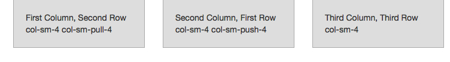
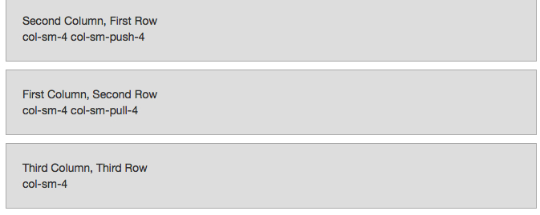

The other big thing that Bootstrap gives you is support for responsive design. Responsive design means that the layout of the page will change depending upon the size of the user's view port. More than shinking the size of a column, it will let you control what is displayed. For example, on a large screen you may have a left gutter with the navigation, but on a smaller screen you may want that navigation bar to be horizontal and above or below the main content area. Using responsive layout you change the appearance of your site while keeping the HTML of your content the same. This makes it easier to adapt your site for mobile and other small devices. Some planning is involved, and it's an approximate solution, but it's a phenominal start.
Mobile browsing can be a significant or even dominant way that people are looking at your site, and laying out a page for a small screen is different then laying it out on a large desktop display. The content could be the same, but it's going to be narrower and the overall spacing and padding will be different.
The main way that bootstrap handles responsive design in the automatic layout system is by collapsing columns -- by specifying the minimum width needed to display columns horizontally, and if the browser is smaller than this width it displays the columns on top of each other.
Bootstrap understand 4 different screen sizes:
| Class | Size | Pixels | Device |
|---|---|---|---|
xs |
extra small | <768 px | phones |
sm |
small | >768px | tablets |
md |
medium | >992px | laptops/desktops |
lg |
large | >1200px | desktops |
There are 4 different column types, each with their own prefix col-xs-, col-sm-, col-md-, and col-lg-. This means "I will be a column on devices this size or bigger, otherwise I'm going to be a row."
If you want a particular element to always be laid out horizontally, specify col-xs-. In practice, start out with using col-md- which makes it a column for devices >992 px and rows for smaller devices.
These classes work using media queries, and they can be layered: you can also specify multiple column types for a given element. Perhaps on a medium screen you want it three across, while on a small screen two across? <div class="col-md-4 col-sm-6">.
With these two things its possible to create any grid-based layout using a minimum amount of CSS classes that will more-or-less look fine across different devices and you can explicitely set the layout of your pages on each of the different screen resolutions.
The col- classes specify how many columns the content should have. The col-*-offset classes specify how the content is shifted over.
Here's an example of pushes and pulls. When the screen is wide enough for the column type, the content is layed out horizontally. Then when it's collapsed, it will display the content vertically.
<div class="row">
<div class="col-sm-4 col-sm-push-4">
<p>Second Column, First Row<br/>
col-sm-4 col-sm-push-4</p>
</div>
<div class="col-sm-4 col-sm-pull-4">
<p>First Column, Second Row<br/>
col-sm-4 col-sm-pull-4</p>
</div>
<div class="col-sm-4">
<p>Third Column, Third Row<br/>
col-sm-4</p>
</div>
</div>
Push and pull controlls the ordering of the content areas when layed out horizontally.

...and the order of the HTML elements determines the order when displayed vertically.

Stacking is a very versitile solution in a lot of situations. Take an example of a form: on a wide screen the labels for the input areas are horizontally placed next to the input, and on a smaller screen they get stacked. It's clean and it works.
But sometimes there's content that just doesn't make sense at a specific screen resolution. For that there are the visible and hidden helper classes:
| Class Name | Description |
|---|---|
| .visible-xs | Extra small (less than 768px) visible |
| .visible-sm | Small (up to 768 px) visible |
| .visible-md | Medium (768 px to 991 px) visible |
| .visible-lg | Larger (992 px and above) visible |
| .visible-print | Visibile on print devices |
| .hidden-xs | Extra small (less than 768px) hidden |
| .hidden-sm | Small (up to 768 px) hidden |
| .hidden-md | Medium (768 px to 991 px) hidden |
| .hidden-lg | Larger (992 px and above) hidden |
| .hidden-print | Hidden when printing |
Full examples can be found at http://getbootstrap.com/css/#responsive-utilities
And its root, the bootstrap framework works by using CSS media queries to change the rules that are applied at different resolutions. For example, the li elements of a navbar are defined as display: inline on a large screen, and display: block on a small screen.
Lets look at the definition of .container to see how it works:
.container {
@include container-fixed();
@media (min-width: $screen-sm-min) {
width: $container-sm;
}
@media (min-width: $screen-md-min) {
width: $container-md;
}
@media (min-width: $screen-lg-min) {
width: $container-lg;
}
}
In this case, it includes the definitions of the container-fixed properties, which defined a full width div touching the left and right sides of the screen. And then overrides the width property based upon the size of the screen. The order matters here. Lets say that the current screen width is between $screen-md-min and $screen-lg-min.
In this scenario, we know that the actual width > $screen-sm-min (since $screen-md-min > $screen-sm-min) so the width: $container-sm; rule applies. But immediately following that, there's the second media query which also applies, so now we override with width: $container-md. In our scenario the screen is less than $screen-lg-min so the third rule will not apply until the user makes the window bigger.
This is the mechanism where you can have multiple column types on the screen: the larger rules overide the smaller rules.
With this foundation, the grid system is built up. In many ways the grid system is the primary way that you implement responsive-ness - when we go through form layouts you'll see that responsive forms are implemented with a nest grid that follows all of the same rules - but its important to understand the media query mechanism that underlies everything, since you'll use that to customize specific components.